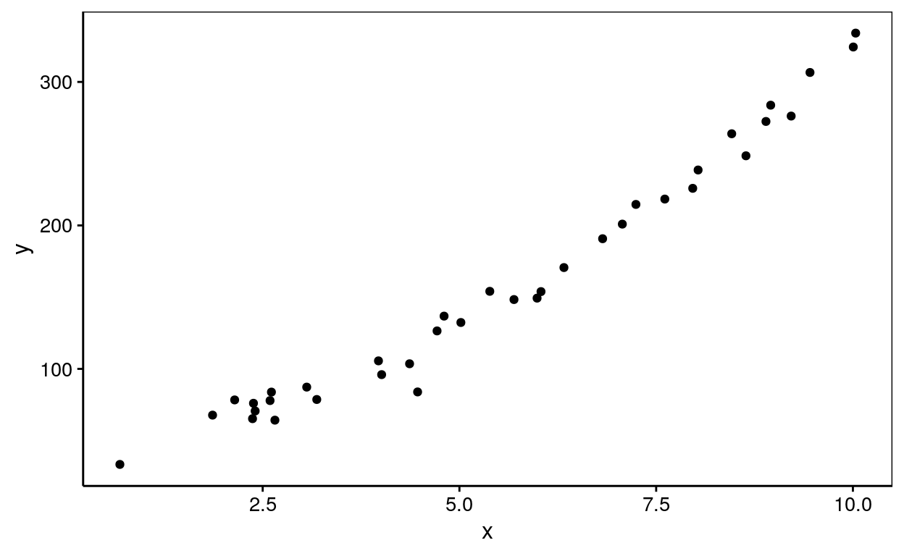

Science des données biologiques II
Réalisé par le service d'Écologie numérique, Université de Mons (Belgique)Objectifs
- Maîtriser la régression linéaire polynomiale dans R avec la fonction
lm(). - Utiliser le critère d’Akaike pour comparer deux modèles.
Régression linéaire polynomiale
Réalisez la régression linéaire polynomiale d’ordre 2 de la variable y en fonction de la variable x sur le jeu de données df. Vous avez à votre dispositon un nuage de points et un résumé des données pour prendre connaissance des données.

💬 Un snippet peut vous aider à réaliser cet exercice.
# Résumé des données
summary(df)
# Regression lineaire polynomiale
summary(lm. <- lm(data = ___, ___ ~ ___))
lm. %>.% (function (lm, model = lm[["model"]], vars = names(model))
chart(model, aes_string(x = vars[2], y = vars[1])) +
geom_point() +
stat_smooth(method = "lm", formula = y ~ x + I(x^2)))(.)#snippet
summary(lm. <- lm(data = DF, YNUM ~ XNUM + I(XNUM^2)))
lm. %>.% (function (lm, model = lm[["model"]], vars = names(model))
chart(model, aes_string(x = vars[2], y = vars[1])) +
geom_point() +
stat_smooth(method = "lm", formula = y ~ x + I(x^2)))(.)
#### ATTENTION: Hint suivant = solution !##### Résumé des données
summary(df)
# Regression lineaire polynomiale
summary(lm. <- lm(data = df, y ~ x + I(x^2)))
lm. %>.% (function (lm, model = lm[["model"]], vars = names(model))
chart(model, aes_string(x = vars[2], y = vars[1])) +
geom_point() +
stat_smooth(method = "lm", formula = y ~ x + I(x^2)))(.)Suite à votre analyse répondez aux questions suivantes :
Régression linéaire simple ou polynomiale
Réalisez une régression linéaire simple et une régression linéaire polynomiale d’ordre 2 de la variable y en fonction de la variable x sur le jeu de données df. Utilisez le critère d’Akaike afin de déterminer le meilleur modèle. Vous avez à votre dispositon un nuage de points et un résumé des données pour prendre connaissance des données.
💬 Un snippet peut vous aider à réaliser cet exercice.
# résumé
summary(df)
# régression linéaire simple
summary(lm_lin_simp <- lm(data = ___, ___ ~ ___ ))
# régression linéaire polynomiale
summary(lm_lin_poly <- lm(data = ___, ___ ~ ___ ))
# comparaison des 2 modèles
___(lm_lin_simp, lm_lin_poly)# snippet 1
summary(lm. <- lm(data = DF, YNUM ~ XNUM))
lm. %>.% (function (lm, model = lm[["model"]], vars = names(model))
chart(model, aes_string(x = vars[2], y = vars[1])) +
geom_point() +
stat_smooth(method = "lm", formula = y ~ x))(.)
# snippet 2
summary(lm. <- lm(data = DF, YNUM ~ XNUM + I(XNUM^2)))
lm. %>.% (function (lm, model = lm[["model"]], vars = names(model))
chart(model, aes_string(x = vars[2], y = vars[1])) +
geom_point() +
stat_smooth(method = "lm", formula = y ~ x + I(x^2)))(.)# snippet (suite)
AIC(lm.)
#### ATTENTION: Hint suivant = solution !##### résumé
summary(df)
# régression linéaire simple
summary(lm_lin_simp <- lm(data = df, y ~ x ))
# régression linéaire polynomiale
summary(lm_lin_poly <- lm(data = df, y ~ x + I(x^2)))
# comparaison des 2 modèles
AIC(lm_lin_simp, lm_lin_poly)Suite à votre analyse répondez aux questions suivantes :
Conclusion
Vous venez de terminer votre séance d’exercices.